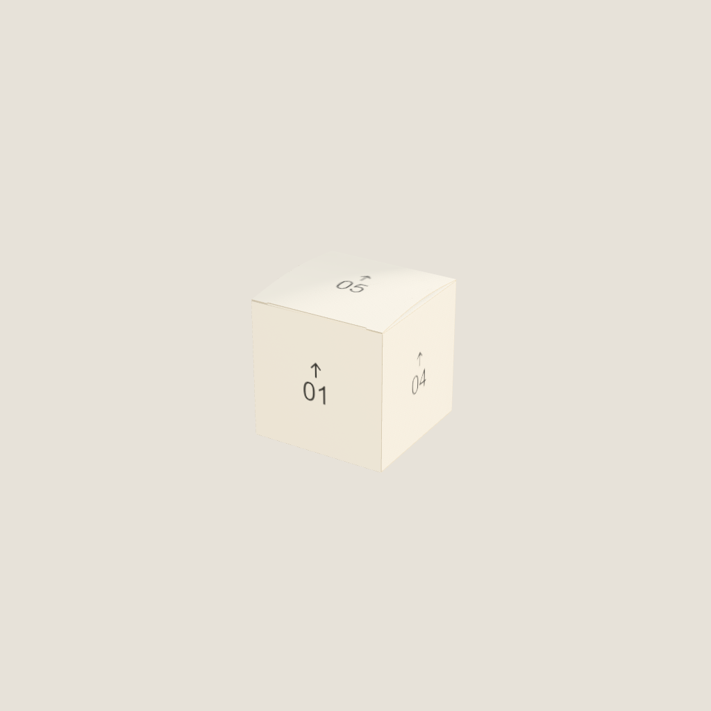
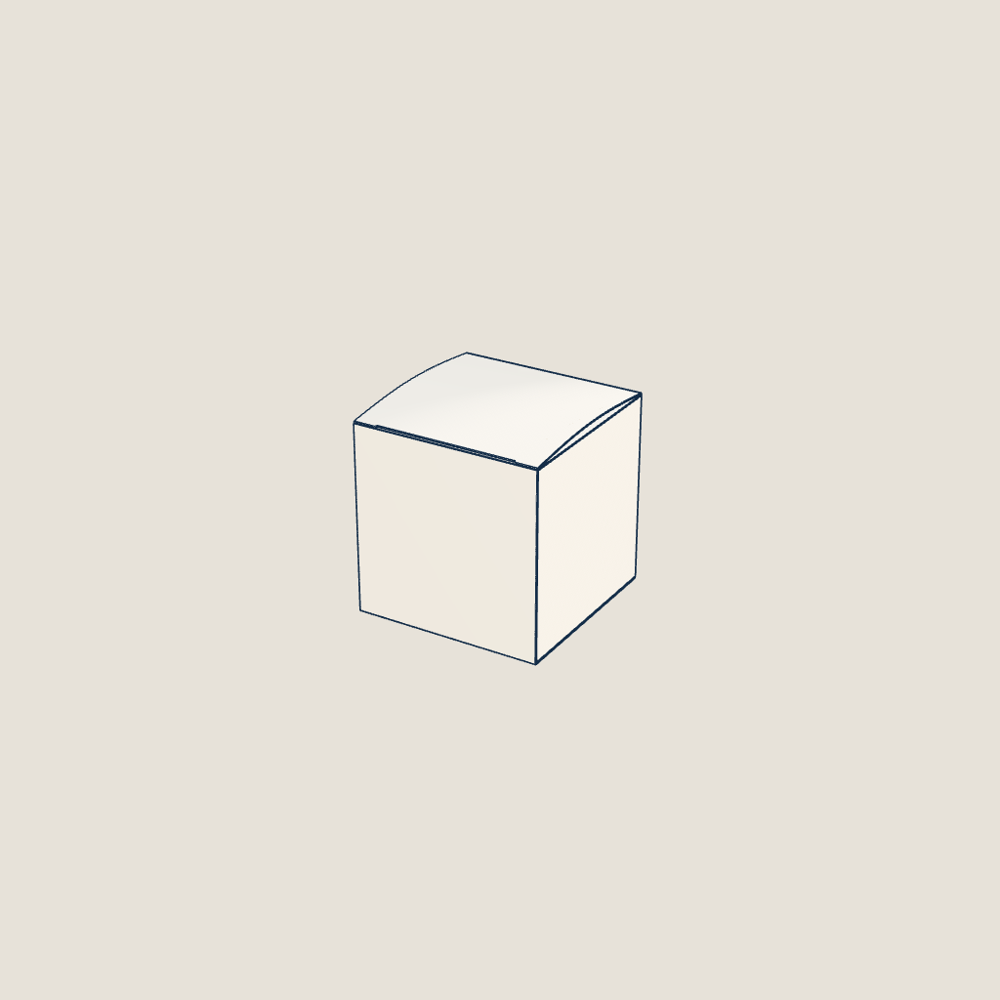

USEIT / B01 插盖盒 / B01 V1原始测试 旧图修复回放 B01 V1 · 新图完整复测 B01 V1 / 2026.11.15 / 完整流程实测
带图三维盒子，本轮仍未通过。 新画稿已生成，装配失败，最终只有白模。 left 面未匹配；整版没有保存，13 个面都没有主题图片。
2026.11.15 12:46:21 → 12:51:13 北京时间 · 1 次请求 · 无额外确认
用户发送请求 → 界面结束 约 4 分 52 秒
本次单任务参考费用（USD） $0.4944
失败 / 拒绝调用 6 次
费用按记录用量和系统配置费率核算，实际扣款账单未核验。总等待包含失败、恢复和最终回复，指本轮结束，不代表盒子制作成功 ；界面以 2 秒间隔观察，结束时间误差约 2.06 秒。
测试后的真实图片 4 分 52 秒花在哪里 6 次失败 原问题与修改 美元费用 逐步链路 01 / 测试后的真实图片 
最终核验：主题画稿没有贴上盒子 本次新生画稿：有图，但装配失败 查看 Agent 本轮原始三维截图 
Agent 实际返回的是白模 保存状态核验： 产品母版存在，13 个面及整版画稿层的图片数量全部为 0；成功装配记录为 0。单独一张二维图和可折叠白模，都不足以算制作完成。
测试后独立检查 0.048 秒，补充 artwork 渲染 1.949 秒。二者单列，不混入本轮 Agent 耗时或原始调用次数。
02 / 约 4 分 52 秒，时间花在哪里 最多的是模型请求：212.483 秒，占总等待约 73%。 共 18 次主模型请求，包含读规格、安排步骤、出错后选择路径和最后回复。这是整次模型请求的等待时间，现有日志不能再拆成纯推理、网络传输和供应商排队。
时间部分 实际耗时 在做什么 212.483 秒 18 次主模型请求，包含出错后选择下一步；这些时间不是生图。 17.690 秒 1 次实际生图请求的外层执行时间；包含其内部处理，不叠加子调用。 22.886 秒 提交一次装配并查询同一任务；最终因 left 面不匹配而失败。 7.445 秒 包含一次错误文件读取、重新列出画布和白模截图。 5.941 秒 读取资料、方案、刀版准备和快速拒绝等剩余工具动作。 16.735 秒 本地 Agent 总时长扣除上面互不重复的阶段，未进一步拆分。 8.984 秒 界面观察总等待减去本地 Agent 耗时；不能全部归因于网络。
合计 292.164 秒。 其中本地 Agent 执行 283.180 秒；请求启动、传输与界面结束衔接约 8.984 秒。
装配内部耗时与统计口径 一次装配请求在约 20 秒后返回运行中任务编号，随后查询同一任务并确认失败；没有把运行中误记成超时，也没有重新装配。
记录层级 用时 说明 后台任务执行 22.646 秒 包含真实后台工作，部分与后续模型请求重叠，不能额外加到总等待上。 前端处理回执 20.464 秒 失败前端回执的整次操作时间。 其中：加载素材 3.848 秒 下载等待 0.002 秒、本机读取 3.401 秒、解码 0.343 秒、哈希 0.100 秒等；未重新生图。
总等待取请求发送至首次观察界面结束，上界值，2 秒轮询。主模型、外层工具和前端往返使用本地已测 duration_ms，避免嵌套重复相加。手动 phase 记录的日期字段在完成时填写，不能拿其起止日期叠加成甘特图；Langfuse 日期另列为链路参考。剩余时间明确列为未细分衔接。
没有机械扣掉失败调用来冒充“正常完成预计时间”。此次目标未完成，无法据此给出成功制作的可靠耗时。
03 / 6 次失败或拒绝，逐条保留 逐条核对回执内容后为 6 次失败/拒绝。Langfuse 仅标出 3 个 ERROR；界面中 preparation failed 曾被误标成功。running 状态是正常异步受理，不算失败；装配失败只计其最终查询回执一次。
失败 01 / 步骤 8 tool_product_image_gen 0.012 秒
生图参考图未准备好 制品生图要求已登记的当前母版刀版参考图，本次未满足前置条件；没有发出生图请求。
原始回执与定位 [product_image_gen] Prepare the current packaging dieline guide before generating net artwork. No generation was requested. 对应 Langfuse 调用 ↗ · call_15475822208433800809
Langfuse 原始级别：DEFAULT。本站按回执实际结果判断失败。
失败 02 / 步骤 9 tool_diecut_formula 0.960 秒
准备参考图时用了错误 SVG 传入 SVG 没有 data-product-geometry，工具要求使用产品母版；回执正文写 preparation failed，界面却标为成功。
原始回执与定位 [tool_diecut_formula] preparation failed: The SVG has no registered data-product-geometry; use the product master 对应 Langfuse 调用 ↗ · call_8433553432099871957
Langfuse 原始级别：DEFAULT。本站按回执实际结果判断失败。
失败 03 / 步骤 10 tool_image_gen 0.016 秒
完整制品误用通用生图入口 用途校验要求走制品生图入口，调用被拒绝；没有发出生图请求。
原始回执与定位 [image_gen] Complete configured-product artwork requires tool_product_image_gen; use explicit usage='asset' or 'concept' only for those purposes. No generation was requested. 对应 Langfuse 调用 ↗ · call_12066474519630700817
Langfuse 原始级别：DEFAULT。本站按回执实际结果判断失败。
失败 04 / 步骤 13 canvas_product_add_status 1.602 秒
新图 left 面配准失败 未找到 left 对应的辅助线区域，整版装配被拒绝，没有部分保存。查询的是原任务，没有再次装配。
原始回执与定位 The flat spread did not line up with the dieline for left（右侧）; nothing was placed. Causes: left: No matching observed guide region 对应 Langfuse 调用 ↗ · call_9866372080284831075
Langfuse 原始级别：ERROR。本站按回执实际结果判断失败。
失败 05 / 步骤 14 tool_dieline_fit 0.012 秒
尝试了不支持的独立配准路径 该制品要求使用母版装配入口，独立 tool_dieline_fit 被规则拒绝。
原始回执与定位 [inline:denied] tool_dieline_fit: Call canvas_product_add(deliverable_id='tuck-box-jensen', source=<exact saved image path>) directly, omitting face. Canvas uses the current master to detect guides, fit all faces, clean the temporary lines and save the shared 2D/3D artwork. Do not call tool_dieline_fit for this product. Check placement_mode='spread' and the returned faces before claiming success. If assembly fails, keep the original image and report its error; do not regenerate to fix alignment. 对应 Langfuse 调用 ↗ · call_18177154961720200930
Langfuse 原始级别：ERROR。本站按回执实际结果判断失败。
失败 06 / 步骤 15 canvas3d_read 3.411 秒
三维文件标识错误 首次 canvas3d_read 返回 File does not exist；随后列出当前画布后，白模渲染成功。
原始回执与定位 File does not exist 对应 Langfuse 调用 ↗ · call_9881182012993713365
Langfuse 原始级别：ERROR。本站按回执实际结果判断失败。
生图后来以 concept 用途走通用入口得到一张展开图。这只是本轮实际恢复路径，不代表制品生图的前置准备问题已经解决。
04 / 原来的问题、为什么错、改了什么 原来的错误现象： 原 B01：13 面中 back、glue、top-lid-front、bottom-tongue、bottom-dust-right 共 5 面失败，整版没有保存，三维只有占位面。
原来为什么错： 旧算法主要靠颜色找辅助线，画稿背景也偏青色，所以认错了；AI 生图又把折线画偏，程序扩大查找范围后，误删了更多画稿。
现在改了什么： 加入更严格的辅助线识别，只清理确认找到的线条及其窄边缘，保留周围画稿。原有对齐和越界检查继续保留，没有靠跳过检查强行通过。
验证版本 实际结果 能说明什么 原 B01 · 11 月 13 日 5 面失败；整版未保存 记录原始问题。 B01-R1 · 11 月 14 日旧图回放 原图由 8/13 → 13/13，仍需边缘复核 确认原图配准问题有所修复；没有运行新图完整流程。 B01 V1 · 11 月 15 日新图完整复测 本轮 left 面未匹配；全部未保存；最后只有白模 新图完整流程仍未通过，不能把旧图回放通过当作全面修好。
本轮不是同一张原图的受控复测：Agent 未走通制品参考图准备，后来以 concept 用途调用通用生图；新图又遇到 left 面辅助线区域无法匹配。原五面修复不能视为完整流程已修好。
本轮暴露的下一步修复点 打通“当前母版 → 生图参考图 → 制品生图”的固定流程，避免入口选错和参考图拿错。 对本次 left 面未匹配继续定位；保持完整面校验，不能强行保存半张稿。 让 preparation failed 和前置校验拒绝统一上报失败，避免监控漏记。 以上是待修复事项，不是本轮已经完成的改动。测试过程中没有修改业务代码或替换生成图片来改变结果。
05 / 单次请求参考费用 $0.4944 模型 $0.4544 + 生图 $0.0400。按本任务最后一次累计用量和系统配置费率核算，含失败恢复中的模型消耗与缓存读取；不是供应商实扣账单。生图使用自带密钥，配置参考价 edit 为每张 0.04 美元。本机算力、存储和流量未计价。
项目 调用 / 用量 参考 USD gemini-3.8-flash 18 次；输入 1,531,797 token，其中缓存 1,148,315；输出 21,456 $0.4542 gemini-3.1-flash-lite-preview 1 次；输入 968 token，其中缓存 0；输出 8 $0.0003 openai_image_gen / edit 1 次实际生图，1 张 $0.0400
只取本任务最后一次累计用量，避免重复相加；本轮没有重新发起第二轮用户请求。被前置校验拒绝的生图调用没有出图，但选择和恢复这些调用的模型消耗仍在总费用内。
查看费率及费用数据依据 费率来源：useit-studio-backend/backend/app/services/workflow/credits.py。这是该测试环境配置的参考价。
{
"models": [
{
"model": "gemini-3.8-flash",
"rate": {
"input": 0.75,
"output": 3.75,
"cache_read_multiplier": 0.1,
"cache_creation_multiplier": 1
}
},
{
"model": "gemini-3.1-flash-lite-preview",
"rate": {
"input": 0.25,
"output": 1.5,
"cache_read_multiplier": 0.25,
"cache_creation_multiplier": 1
}
}
],
"services": [
{
"service": "openai_image_gen",
"variant": "edit",
"rate": {
"usd_per_unit": 0.04
}
}
]
} 下载本轮脱敏记录与费用明细
06 / 18 次模型请求，每一步具体在做什么 本次 Langfuse Session ↗ · 本次 Trace ↗ · 47 条 Observation
表内模型耗时相加为 212.483 秒。工具与模型分列，未把 agent.run、agent.round、子调用等嵌套记录重复相加。
测试输入、修改版本与校验信息 实际发送的用户提示词：
做一个65×65×65毫米的插盖盒，主题是“黄仁勋参加华为面试”，采用明显虚构的幽默卡通插画。其他用默认设置，直接完成画稿、装配，并给我看带画面的三维盒子预览。 主模型：gemini-3.8-flash。新建独立项目、重新生图；没有在用户提示词里指定工具名或字段。
本地修改文件 SHA-256 useit-agent-pack-dieline/useit_dieline/spread/registration.py ac028c25b7edba67be03ef2e2590a18b2d52702986893beb7d2bdca5bafdf35duseit-agent-pack-dieline/useit_dieline/spread/fit.py 07da09cd131bc5a8309f3fcbcd103acbcb5feb6ddac3b2438dec6eaa8d7a6862useit-agent-pack-dieline/useit_dieline/ops.py 1958057345d639176b7fcdb674c1a0a5b6133f8c5f5bd82f4d64c3d1daf05bc2useit-studio-frontend/src/features/workspace/canvas/product-preview/addToProduct.ts c24d98114e1283b9b85870bd0b51bc0bb3772ffff5d5ca08bef5222af443d1ba
这些是本轮开始时的工作区代码快照。原图配准修复版本详见 B01-R1 。
下载完整脱敏测试数据
← 返回原始 B01 · 查看旧图修复回放